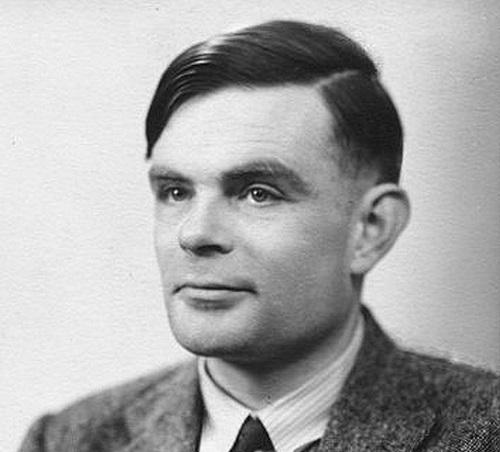

Bio
Turing was highly influential in the development of theoretical computer science, providing a formalisation of the concepts of algorithm and computation with the Turing machine, which can be considered a model of a general-purpose computer.
Quick Facts
- Full Name: Alan Mathison Turing
- DoB: 23 June 1912
- Known for:
- Thesis: Systems of Logic Based on Ordinals (1938) [PDF]
- Favourite fairy-tale: Snow White and the Seven Dwarfs